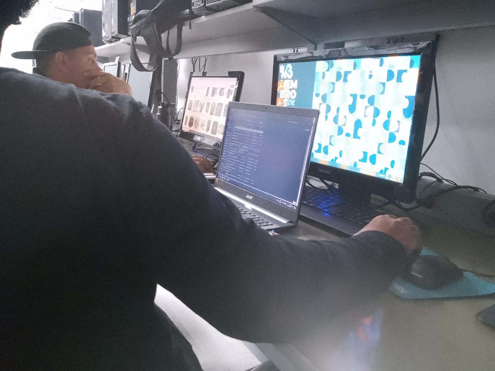

Surgimento do projeto:
O projeto Open Voice começou com uma equipe de 4 pessoas com a ideia de recuperar peças de hardware que haviam sido descartadas, muitas vezes consideradas como "condenadas", para montar computadores. No entanto, questionávamos o que poderíamos fazer de diferente além de ajudar o meio ambiente. Foi quando nosso professor, Marcelo, nos deu uma sugestão brilhante: adicionar música ao projeto. A partir daí, o projeto deu seus primeiros passos. "E se criássemos um karaokê?", pensamos, e assim surgiram uma ideia atrás da outra.
Problemas e solução:
Criamos um software de karaokê do zero e o disponibilizamos gratuitamente em nosso site. Nossa proposta é que todos possam criar seu próprio karaokê personalizado sem custo algum. Imagine aquele antigo PC com um processador Pentium que está parado e mal consegue rodar qualquer coisa. Com apenas uma caixa de som e esse desktop/notebook esquecido, você pode transformá-lo em um centro de karaokê para animar um churrasco em família. E o melhor de tudo, nosso software é multiplataforma, funcionando em Windows, Mac e Linux. Tudo isso está disponível sob nossa marca, em nosso site Open Voice.